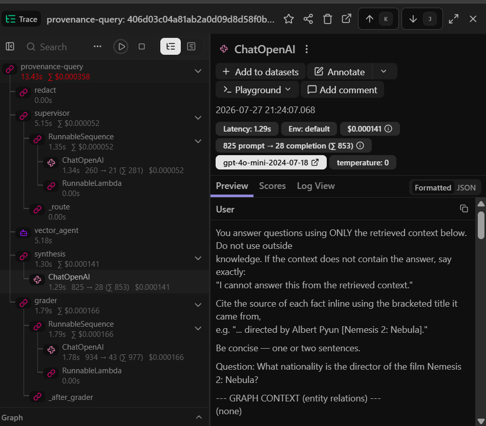
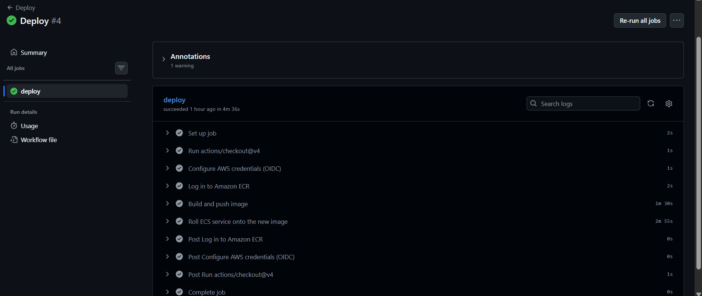

The problem
Flat vector RAG breaks on compositional questions, where the answer needs facts that never appear in the same chunk: "What nationality is the director of the film Nemesis 2: Nebula?" needs film, then director, then nationality. The benchmark is 2WikiMultihopQA, loaded as 1,896 graph entities in Neo4j and 3,463 passage vectors in Qdrant.
How it works
A LangGraph state machine redacts PII with Presidio, then a supervisor agent decides between graph traversal (read-only-guarded text-to-Cypher) and semantic retrieval, or both. A synthesis agent writes a cited answer and a grader checks it against the retrieved context; if a claim is not grounded, a bounded repair loop retries with broader retrieval. Every response carries citations, a faithfulness verdict and the reasoning trace.

The stack runs on AWS ECS Fargate behind an Application Load Balancer and an HTTPS API Gateway, provisioned with Terraform and deployed by GitHub Actions over OIDC, with no long-lived cloud keys.

Results
| RAGAS, 12 curated multi-hop questions | Agent | Flat-vector baseline |
|---|---|---|
| Faithfulness | 0.65 | 0.53 |
| Answer relevancy | 0.63 | 0.47 |
Live traffic over about 2 hours 45 minutes: 1,013 requests, 0 errors, p95 around 1.2 s for the mix of health
checks and queries, and about $0.0004 per query in model cost. The whole stack costs $2–4 a day while running and
terraform destroy takes it to zero.
What I learned
Honest margins beat perfect numbers
The agent wins, but not by a landslide: where the graph lacked a path it fell back to vector search. Saying so is more credible than a suspiciously perfect score.
A latency number needs its request mix
Health checks dominated p50; the real agentic calls, with up to four sequential LLM calls, sit in the tail. A real SLO needs a metric per route.
Gate quality in CI
A faithfulness threshold in the pipeline turns evaluation from a report into a rule that blocks regressions.